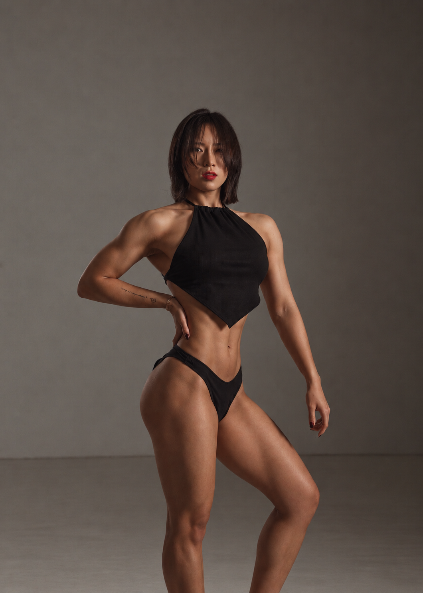
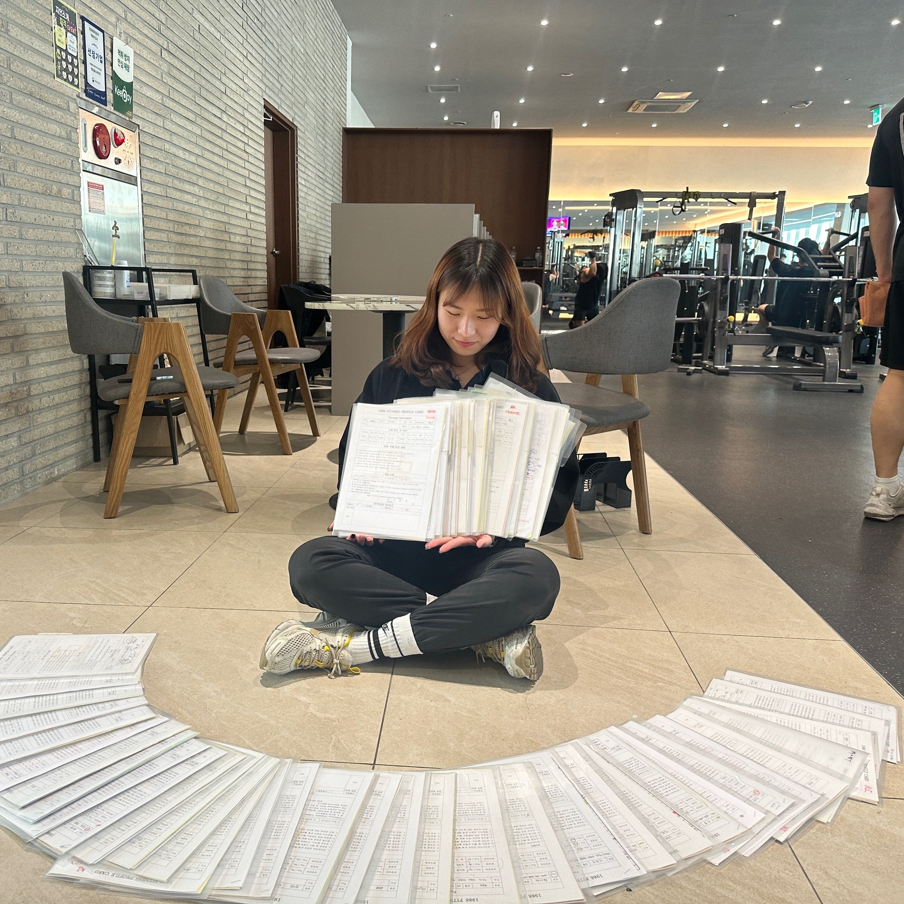
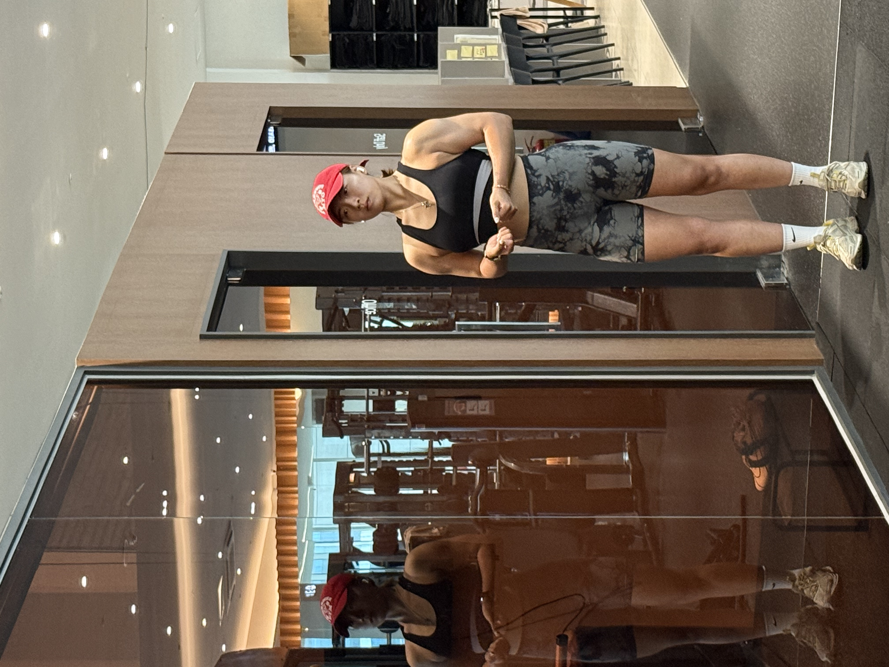
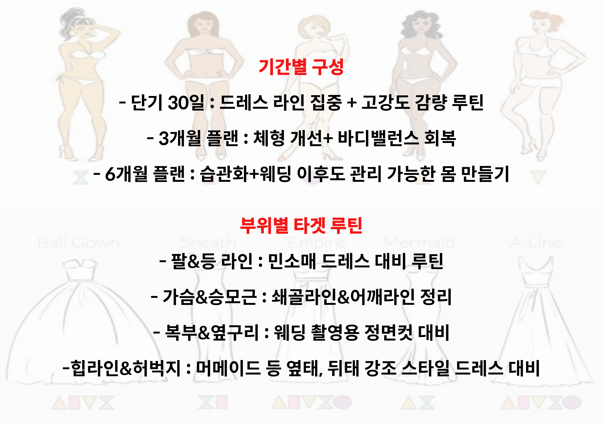
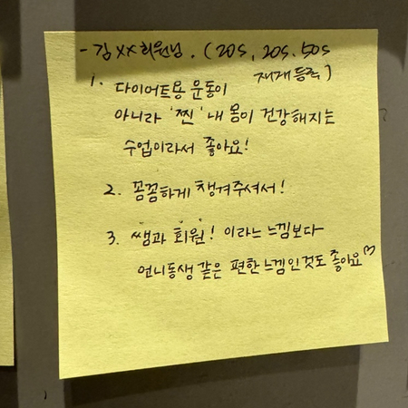
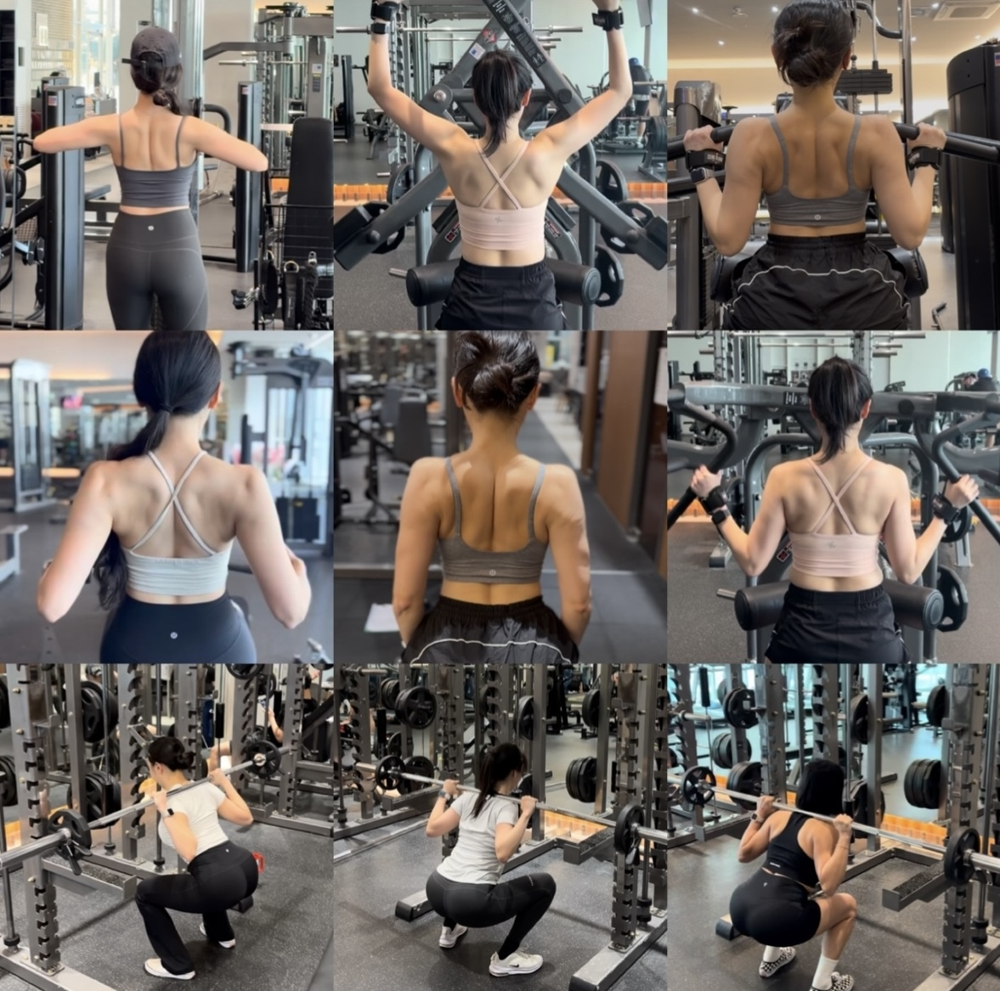

1986 FITNESS / PARK JI EUN
마음먹은 변화를,
끝까지 함께.
박지은 주임 · 여성 전문 트레이닝
웨딩 준비부터 혼자 하는 운동까지.
시작할 용기, 계속할 힘을 함께 만듭니다.


EXPERIENCE IN WONHEUNG
원흥역에서 만난
300명 이상의 여성 회원님.
운동을 처음 시작하는 순간부터, 웨딩을 앞둔 특별한 준비까지.
여러 여성 회원님을 지도하며 쌓은 경험으로 각자의 목표와 출발점을 살핍니다.
누군가에게는 자세를 배우는 시간이, 누군가에게는 멈추지 않도록 이끌어주는 코치가 필요합니다. 박지은 주임은 지금 필요한 도움을 함께 찾습니다.
지도 인원은 트레이너가 제공한 누적 경험 기준입니다.
STRONG COACH, STRONGER YOU
강한 코치와 함께,
나도 더 강해지는 시간.
말보다 먼저, 운동으로 보여주는
단단한 여성 트레이너.
직접 몸을 만들며 쌓아온 끈기와 집중력.
박지은 주임의 강인함은 회원님이 한 번 더 도전할 수 있도록 이끄는 힘이 됩니다.
무조건 버티게 하는 수업이 아닙니다. 자세와 컨디션을 살피면서, 스스로 정해둔 “못해요”를 “해냈어요”로 바꿔갑니다.
YOUR TRAINING GOAL
당신의 목표에 맞춘
세 가지 수업 방향.
누르면 자세한 수업 내용을 볼 수 있습니다.

WEDDING웨딩 준비소중한 날, 나다운 자신감을 입도록.상세 커리큘럼 보기상세 접기+

INDEPENDENT TRAINING스스로 하는 운동PT가 없는 날에도, 무엇을 할지 알 수 있도록.상세 커리큘럼 보기상세 접기+

CONSISTENCY꾸준함을 만드는 코칭시작할 마음을, 계속하는 힘으로.상세 커리큘럼 보기상세 접기+
START WITH PARK JI EUN
이번에는,
함께 끝까지 가볼까요?
웨딩 일정이 있어도, 운동이 처음이어도 괜찮아요.
원하는 변화와 지금의 고민부터 들려주세요.